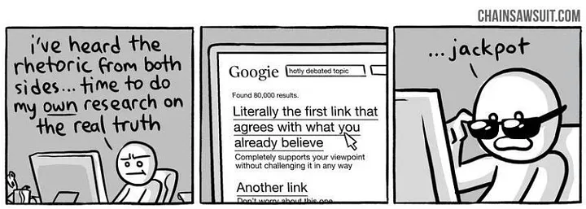
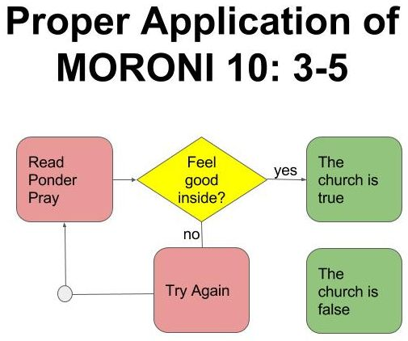
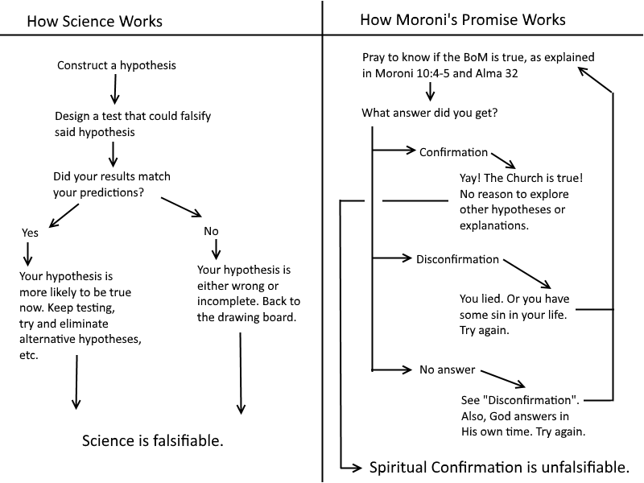

🧠 Cognitive Bias¶
Estimated time to read: 10 minutes
How do we discern between faith and cognitive bias?
Overview of Biases¶
Biases are not inherently bad. They are not a sign of ignorance, bad intention, nor contrarianism. They can lead to bad conclusions, however. We all are prone to biases, and its part of being a human.
There is simply too much information in the world for us to ingest and process, in order for us to come to a reliable conclusion. We have no choice but to filter it, or else we’d never come to a conclusion on anything. Cognitive biases are ways out brain tries to determine what’s most likely to be useful. Our brains aren’t always good at this, so philosophically-minded folks have categorized some of these filtering methods as cognitive biases.
We, as mortal, lay folk, don’t have all information on everything. We must extrapolate and fill in gaps. We are prone to doing this improperly. This notion isn’t really anti-religious, by my understanding. More of philosophical, neither for nor against religion. Recognizing them is used for logical discourse on any topic.
We are humans with emotions. This is not something to be ashamed of. I don’t care how smart one thinks they are, every human is prone to this. I certainly am. Try as we may, being consistently and constantly open-minded is not feasible. You, reader, should be aware of these biases. Then compare how they fit with your existing beliefs.
Confirmation bias¶

The confirmation bias is the tendency to listen more often to information that confirms our existing beliefs. Through this bias, people tend to favor information that reinforces the things they already think or believe.
Examples include:
- Only paying attention to information that confirms your beliefs about issues such as gun control and global warming - Only following people on social media who share your viewpoints - Choosing news sources that present stories that support your views - Refusing to listen to the opposing side - Not considering all of the facts in a logical and rational manner
There are a few reasons why this happens. One is that only seeking to confirm existing opinions helps limit mental resources we need to use to make decisions. It also helps protect self-esteem by making people feel that their beliefs are accurate.
People on two sides of an issue can listen to the same story and walk away with different interpretations that they feel validates their existing point of view. This is often indicative that the confirmation bias is working to "bias" their opinions.
The problem with this is that it can lead to poor choices, an inability to listen to opposing views, or even contribute to othering people who hold different opinions.
— 13 Types of Common Cognitive Biases That Might Be Impairing Your Judgment , Kendra Cherry, MSEd, Updated on February 22, 2024
Second, choose to believe in Jesus Christ. If you have doubts about God the Father and His Beloved Son or the validity of the Restoration or the veracity of Joseph Smith’s divine calling as a prophet, choose to believe and stay faithful. Take your questions to the Lord and to other faithful sources. Study with the desire to believe rather than with the hope that you can find a flaw in the fabric of a prophet’s life or a discrepancy in the scriptures. Stop increasing your doubts by rehearsing them with other doubters. Allow the Lord to lead you on your journey of spiritual discovery.
— Christ Is Risen; Faith in Him Will Move Mountains, President Russell M. Nelson, General Conference April 2021
When questioning members are advised to "take your questions to the Lord and to other faithful sources," what kind of answer can they expect? They're only asking people who believe. From the perspective of Mormonism, faith and confirmation bias seem very difficult to distinguish.
- As long as God continues to help me find my car keys, I won't think about all the suffering in Palestine and Ukraine. All is well in Zion. Zion prospers.
- Keep paying tithing because God has promised ‘blessings such that there shall not be room enough to receive them’, even though month after month we continue in financial struggles.
Made up examples¶
| Something good happens to... | Something bad happens to... | |
|---|---|---|
| Prospective Mormon | A [[What are blessings|blessing]] from God to confirm what the missionaries said is true. On the right track | Satan is trying to derail the conversion & baptism, proving we're right. On the right track |
| Current Mormon | Blessing from God for obedience to baptism covenants. On the right track | Life is a test. Reminder to repent and obey. On the right track |
| Former Mormon | Not real happiness. Forfeited real blessings from God. | Consequences of disobedience. Wicked will not prosper. Forfeited real blessings from God. |
All of these outcomes lead to the same conclusion that the LDS church is true. It can't be false, there's no fail state in these scenarios.
Moroni's Promise¶
Failure to confirm the truth of an impossible counter-claim means that the claim is true.
And when ye shall receive these things, I would exhort you that ye would ask God, the Eternal Father, in the name of Christ, if these things are not true; and if ye shall ask with a sincere heart, with real intent, having faith in Christ, he will manifest the truth of it unto you, by the power of the Holy Ghost.
And by the power of the Holy Ghost ye may know the truth of all things.
Before we get much further, let’s also double check verse 1:
Now I, Moroni, write somewhat as seemeth me good; and I write unto my brethren, the Lamanites;
You, dear reader, in the current year— do you think you qualify as Moroni’s “brethren, the Lamanites”? Or would you fit better in the category shown in verse 24
And now I speak unto all the ends of the earth…
At face value, I might conclude that verses 1 - 23 are not addressed to you and me in [current year]. Does the scripture really tell you to ask God if these things are true? Moroni does not make the promise to those that read the Book of Mormon, he invites the Lamanites to ask God.

Let's examine some of this. It's setting ourselves up for confirmation bias.
Set yourself up for success. Have a sincere desire, have "real intent", believing you will receive an answer.
... and if ye shall ask with a sincere heart, with real intent, having faith in Christ ...
Seek belief through prayer. What will the answer be? idk lol, but if praying doesn't give you the "yes it's true" answer, pray again, you did it wrong.
... he will manifest the truth of it unto you, by the power of the Holy Ghost.
You will receive a confirmation in a nonspecific way. Is it a warm fuzzy feeling? There's your answer. That verifies what you expected to find an answer to. It's true now!
Calling any desirable outcome a "confirmation" may even be too strong of a word. "Did praying about this make you feel really good? No? Did you feel good at all? No? Well did you at least feel not bad? That's God confirming that the book’s contents are true!"
Next, make sure you bear testimony. Put your reputation into it. Verbalize your beliefs repeatedly. Insist that it's true. After enough iterations of this, you'll think “I heard myself say that it was true when I bore my testimony so it must be true.”
Another way to seek a testimony seems astonishing when compared with the methods of obtaining other knowledge. We gain or strengthen a testimony by bearing it.
— Testimony, Dallin H Oaks, General Conference April 2008
Don't forget to only study from approved sources. Just listen to things you already think are true!
Moroni Logic¶
3 Ask God if the things in this record are not true. If ye shall ask with a sincere heart, with real intent, having faith in Christ, he will manifest the truth of it unto you, by the power of the Holy Ghost.
. . .
6 And whatsoever thing is good is just and true; wherefore, nothing that is good denieth the Christ, but acknowledgeth that he is.
In verse 3 specifically, the reader is instructed to ask God if the record is not true. I’m inclined to believe that this wording is not accidental. Have we considered that this means an affirmative answer to the question "are these things not true", and so "these things" are false? The answer you get isn’t exactly clear-cut. It’ll be a single negative or a double negative.
- If yes, (these things are not true), then these things are false.
- If no, (these things aren’t not true) then these things are true.
How do we interpret and discern the answer from God, then? Are we interpreting the warm fuzzy feelings as an affirmative answer to asking if it's false? It sounds to me like Moroni is exhorting us improperly, or is exhorting us to do the opposite of what he wants.
Are the warm fuzzy feelings a sign of the holy spirit testifying of the truth, or as an affirmative to the specific question "are these things not true?" If that is the case, I would exhort you to do some introspection to differentiate between your own bias and divine inspiration.
The claim is "this historical record is true and God confirmed it." The counter-claim is "I asked God if it's not true and God responded with an affirmative 'yeah bro, this shit is bogus.'" However, this is an impossible counter-claim because of Moroni's/JS's conditions:
- You must ask with a sincere heart, with real intent (this is a subjective condition; who determines what is sincere with real intent?)
- all good things are true.
- All good things acknowledgeth the Christ.
- This record acknowledgeth the Christ, therefore it is good.
- Because this record is good, it is therefore true.
- Thus, God cannot whisper anything to you other than "it's true."
If you got a different answer, it wasn't God, or you weren't sincere enough, or you haven't repented of that one time you saw porn... or maybe some combination of the above possibilities.
Does your result agree with theory? No? Something must be wrong with you or your experiment, then. Do it again.

A non-Mormon example of Moroni's Fallacy: "just ask yourself the question, is it impossible for aliens to have been involved in the construction of the pyramids? How do you know aliens were not involved? I'm not saying they used spaceships to lift rocks or anything like that; they might have used advanced tech to inspire the Egyptians to build them. Who knows? Good science means following the evidence to any conclusion, no matter how improbable. Given time, and given how many open questions remain about the pyramids, Egyptologists will have no choice but to consider this possibility."
Others¶
I have a few notes on Congruence Bias and Primacy Bias, but I don't have enough written to warrant a section here. For now, they're in the context of Uchtdorf's "doubt your doubts" block quote.
More links¶
- https://effectiviology.com/confirmation-bias/
- https://www.globalcognition.org/confirmation-bias-3-cures/
- https://betterhumans.pub/cognitive-bias-cheat-sheet-55a472476b18